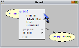
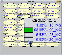

SamIam’s primary means of displaying calculated posterior probabilities to the user is through what we call monitor windows. Since SamIam calculates posterior probabilities by compiling the belief network, monitor windows are only available in Query Mode. Once you have entered Query Mode, the simplest way to show a monitor window for a node is to right-click the mouse over the icon for that node in the network window, and select the menu item labeled "Monitor" from the context menu that pops up.
 |
 |
A monitor window consists of a list of the variable's states, each with a corresponding posterior probability. The monitor window indicates the probability of each state visually with a bar graph icon, and also displays each probability as a percentage number. The visual appearance of the bar graph icon and the number of decimal digits for the percentage number are customizable by the user through the "Preferences" menu.
The monitor windows can also be used to assert evidence. This can be accomplished by first selecting the monitor window of the desired node and then by single-clicking on the desired state. Clicking on the state a second time retracts the evidence assertion.
The "Query" menu and the tool bar also provide some convenient ways to display or hide multiple monitor windows at once. In the "Show Monitors" sub-menu of the "Query" menu, you will find a menu item that hides all visible monitor windows, one that makes a monitor window visible for every node, and one that makes a monitor window visible for every selected node. You can also accomplish showing monitors for selected nodes or hiding all monitors by clicking the corresponding tool bar buttons.